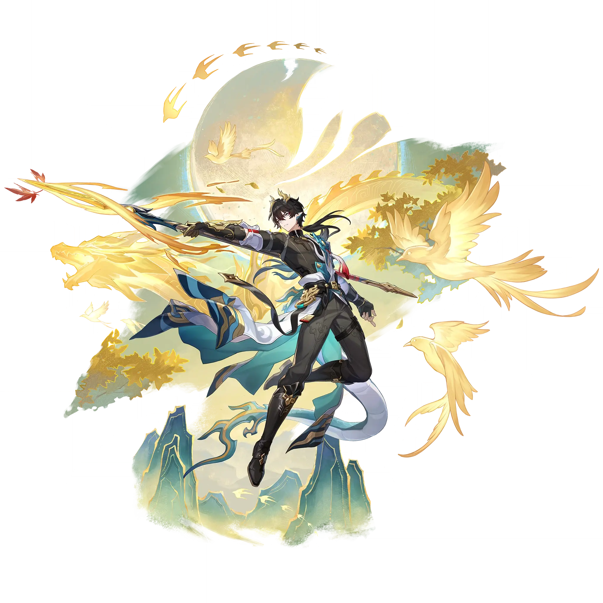

Dan Heng • Permansor Terrae
Best Dan Heng • Permansor Terrae build guide for Honkai Star Rail. See Dan Heng • Permansor Terrae's best Relics, Light Cones, teams, Eidolons, Trace priority, and how to play Dan Heng • Permansor Terrae.
🔍 Detail Skill
Semua skill aktif dan pasif beserta efeknya.
Deals Physical DMG equal to #1[i]% of Dan Heng • Permansor Terrae's ATK to one designated enemy.
Designates one ally character as the "Bondmate" and provides all allies with a Shield that can offset DMG equal to #1[i]% of Dan Heng • Permansor Terrae's ATK plus #2[i] for #3[i] turn(s). When repeatedly receiving Dan Heng • Permansor Terrae's Shield, can stack the Shield Effect, but it will not exceed #4[i]% of the current Shield provided by Skill. "Bondmate" only applies to the most recent targ
When an ally character becomes the "Bondmate," Dan Heng • Permansor Terrae summons "Souldragon" for them, which has an initial SPD of #5[i]. When "Souldragon" takes action, dispels #6[i] debuff(s) from all allies and provides a Shield that can offset DMG equal to #1[i]% of Dan Heng • Permansor Terrae's ATK plus #2[i] for #3[i] turn(s). The Shield Effect provided by Dan Heng • Permansor Terrae and
After using Technique, gains "Bondmate" and inflict Daze on enemies within a certain area for #1[i] second(s). Dazed enemies will not actively attack ally targets. When switching the active character, "Bondmate" transfers to the current active character. At the start of the next battle, automatically uses Skill 1 time on the character with "Bondmate" without consuming any Skill Points.
⚔ Light Cone Terbaik
Diurutkan dari yang paling kuat. Persentase menunjukkan performa relatif terhadap pilihan terbaik.
💎 Relic Set Terbaik
Set terbaik untuk karakter ini, diurutkan berdasarkan prioritas.
📊 Stat Utama
Stat yang dicari pada tiap slot.
👥 Tim yang Direkomendasikan
Karakter yang sering dipasangkan bersama Dan Heng • Permansor Terrae.
 Sunday
Sunday
 Phainon
Phainon
 Robin
Robin
 Dan Heng • Imbibitor Lunae
Dan Heng • Imbibitor Lunae
 Archer
Archer
🔗 Lanjutkan
Build ini dirangkum dari Prydwen Institute. Starwise tidak menghitung sendiri. Angka bisa berubah setelah patch atau karakter baru rilis.